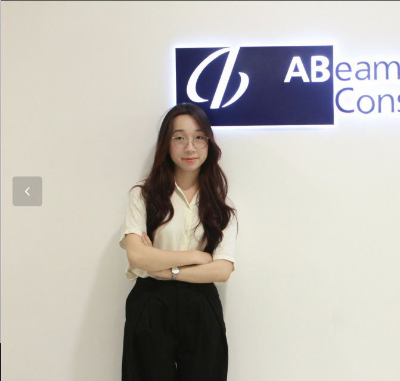

Email: nguyenuyen7560@email.com
Số điện thoại:0706024897
Địa chỉ:Kí túc xá khu B, ĐHQG TP.HCM
Ngành học:Kinh doanh số và Trí tuệ nhân tạo
Sinh viên năm 3 ngành Kinh doanh số và Trí tuệ nhân tạo tại Trường Đại học Kinh tế - Luật, có nền tảng về phân tích và thiết kế quy trình nghiệp vụ doanh nghiệp, cơ sở dữ liệu và phân tích dữ liệu. Quan tâm đến lĩnh vực SAP và mong muốn vận dụng những kiến thức, kỹ năng đã học vào môi trường thực tế, đồng thời phát triển chuyên môn trong vai trò SAP Consultant.
Trường Đại học kinh tế -Luật, ĐHQG TP.HCM (2024-hiện tại)
Kinh doanh số và Trí tuệ nhân tạo - Sinh viên năm 3 | GPA: 3.29/4.00
Thành viên của UEL SAP LAB
Phân tích và đề xuất cải thiện hệ thống hỗ trợ quản lý vận hành Logistic và chăm sóc khách hàng tại Giao Hàng Tiết Kiệm |Đồ án nhóm
Phân tích quy trình| Yêu cầu chức năng| BFD/ DFD| Wireframing| SQL server
Triển khai & Cấu hình Hệ thống ERP (SAP) - CocoaCraft Vietnam |Đồ án nhóm
Business Analysis:Phân tích yêu cầu, Yêu cầu chức năng/ phi chức năng. Mô hình hóa quy trình, UML, BFD/DFD, ERD, Wireframing, Kiểm thử chức năng
Domain & ERP Knowledge:Enterprise Resource Planning (ERP), O2C (Order-to-Cash), P2P (Procure-to-Pay), Business Process Management
Technical:SQL, SQL server
Tools:Figma, Draw.io, Github, Microsoft Office,SAP Fiori, SAP GUI